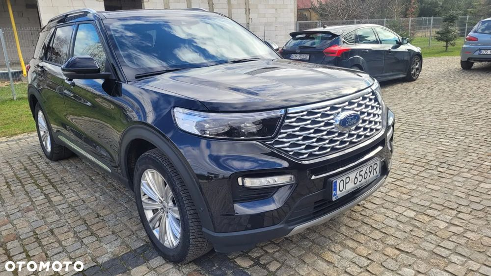
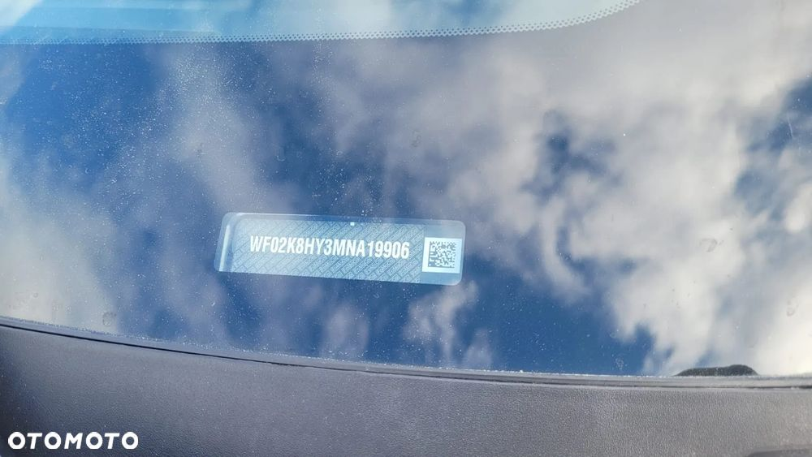
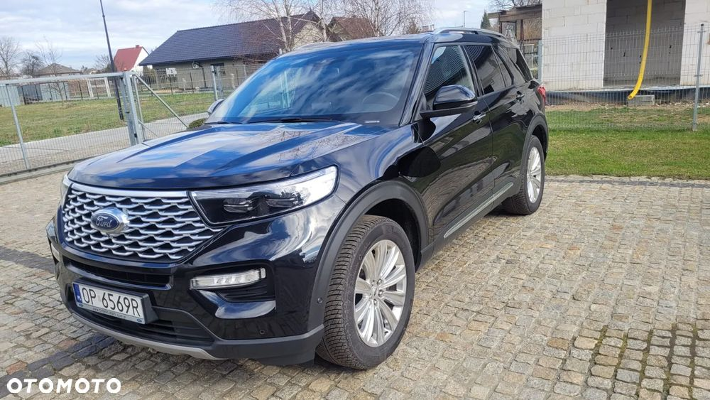
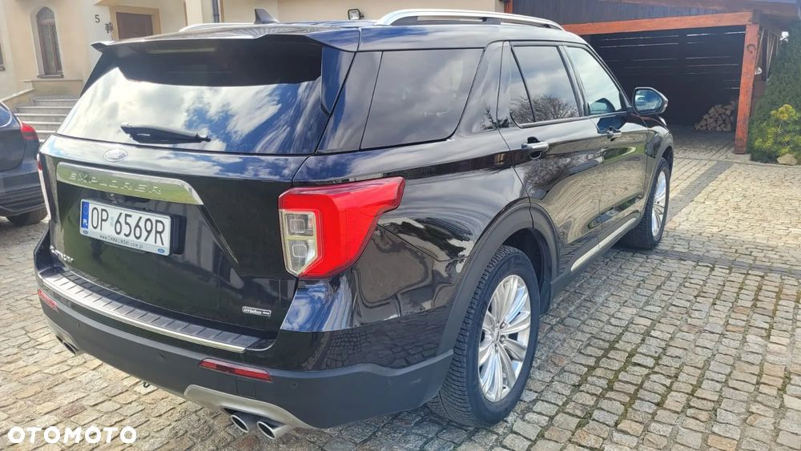
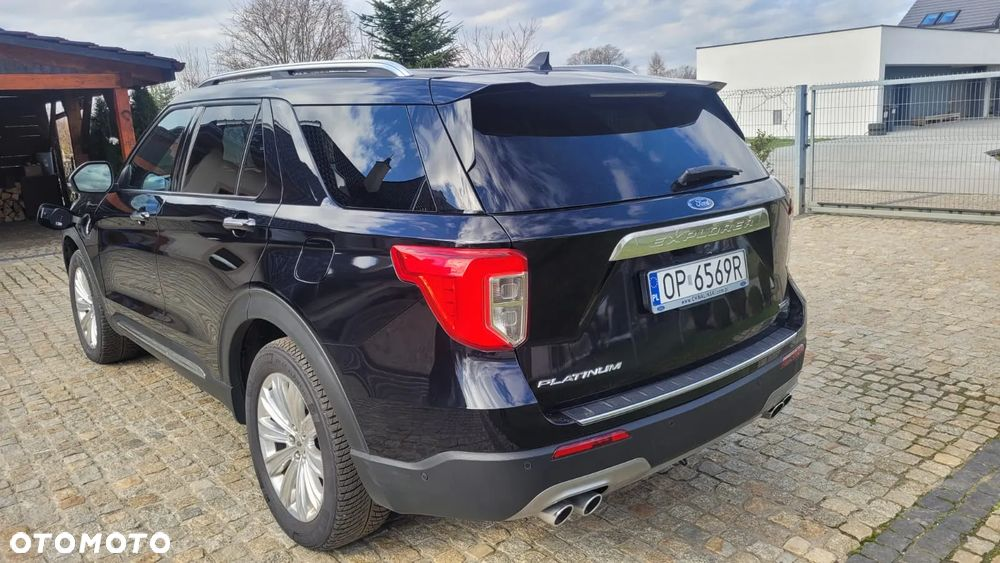
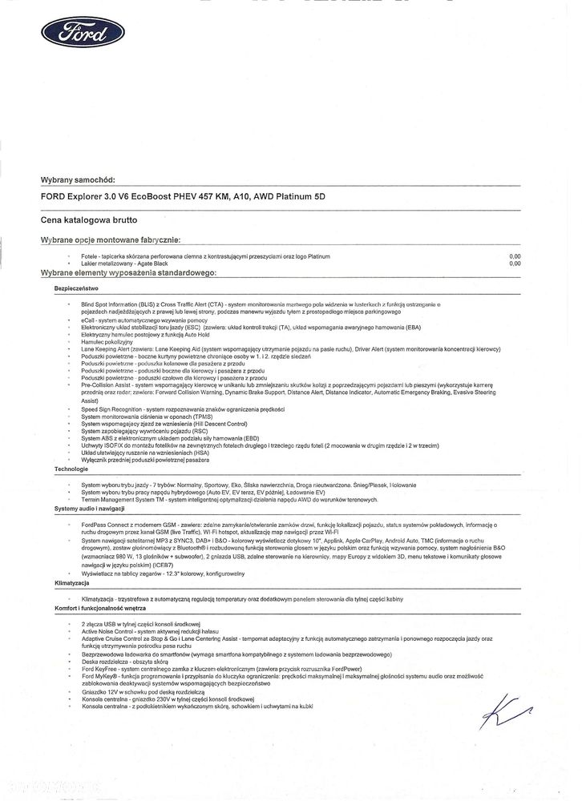
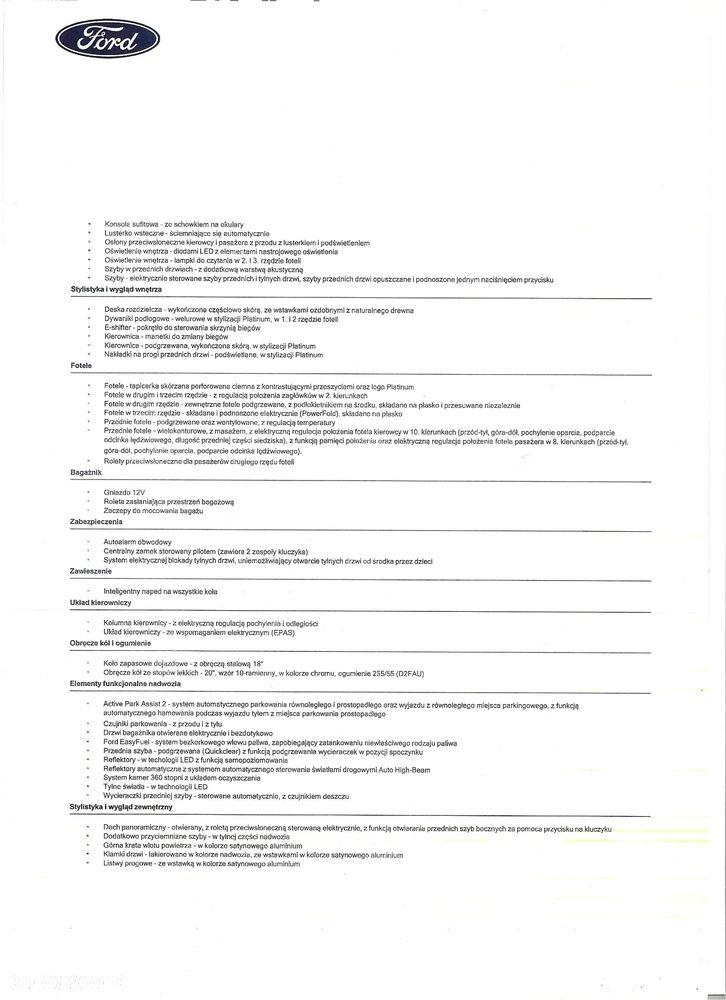

Samochód zakupiony w Opel Chwaliński w Opolu. Ma przedłużoną gwarancję do 6 lat lub 160.000 km, czyli jeszcze 35.000 km na gwarancji.
Samochód jak nowy, serwisowany w ASO (musi być tak na gwarancji).
Zainstalowany hak demontowalny i została położona na lakierze ceramika.
Co do szczegółów wyposażenia, to w zdjęciach umieściłem ofertę dealera na ten samochód
Tutaj podaję te rzeczy najważniejsze (3 pierwsze w zasadzie powinny wystarczyć!):
457 KM (350 z silnika V6 biturbo i 100 z silnika elektrycznego)
825 Nm - momentu obrotowego
5,7 sek. - przyspieszenie do 100 (producent podaje 6,0)
zasilanie plug-in (w mieście można przejechać do 60km na elektryku, na autostradzie 30km...)
aktywny tempomat
FORD PASS CONNECT z modemem GSM (śledzenie pojazdu, odpalanie i otwieranie zdalne, Wi-Fi hot spot, itd)
oświetlenie full led (adaptacyjne)
7 siedzeń, w 3 rzędzie oba siedzenia rozkładane elektrycznie
podwójny szyberdach
wentylowane siedzenia przednie
siedzenie kierowcy z pamięcią dla 3 ustawień
regulowana elektrycznie w dwóch płaszczyznach kierownica
ruchome siedzenia, odjeżdżające po zgaszeniu silnika
podgrzewane 4 siedzenia i kierownica
klimatyzacja 3-strefowa (kierowca, pasażer i tył)
koła 20''
sam umie zaparkować i przy cofaniu do tył, zatrzymuje się sam przy napotkaniu przeszkody
10 głośników i potężny SUBWOOFER
generalnie technologiczne cudo!... za dobre pieniądze
